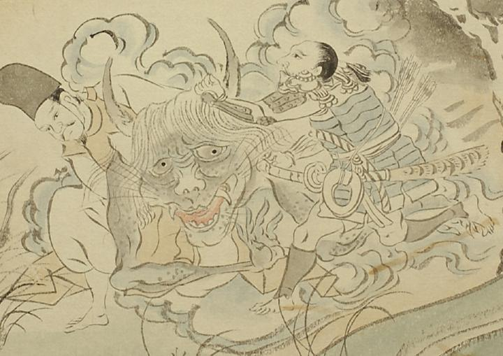

鬼のような化物。肌は浅黒く、斑が入っている。頭の左右から長い角を生やし、髪の毛を垂らしている。目玉は大きく、口は大きく裂け、上顎に大きな牙が生えている。頬と顎に獣のようなひげが生えている。2人の侍に左右から押さえつけられて、屈んでいる。
出典：親書誌：U426_nichibunken_0056：土蜘蛛草紙；ツチグモソウシ／日付：2007／資源識別子：U426_nichibunken_0056_0006_0001
Copyright (c)2010- International Research Center for Japanese Studies, Kyoto, Japan. All rights reserved.